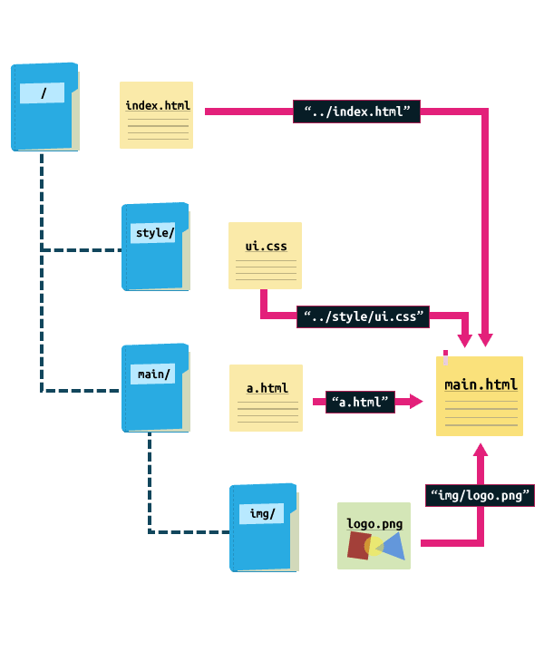

CSS
CSS는 HTML로 작성된 문서를 쓰기 위한 스타일 시트 언어입니다.
HTML은 문서의 골격을 이룬다면, CSS는 그 골격에 맞는 디자인 작업 언어라고 생각하면 됩니다.
CSS선택자
CSS 선택자를 통해 요소를 선택하고 속성을 줄 수 있습니다.

id선택자와 class 선택자
- id 선택자
- 하나의 태그만 식별하기 위한 선택자입니다.
- 하나의 태그에서 하나만 사용할 수 있습니다.
"#"으로 표시합니다.
- class 선택자
- 여러개의 태그를 식별하기 위한 선택자입니다.
- 한나의 태그에서 여러 개를 사용할 수 있습니다.
"."으로 표시합니다.
CSS 선택자
CSS는 선택자를 통해 요소를 선택할 수 있습니다.
CSS
CSS는 선택자를 통해 요소를 선택할 수 있습니다.
기본 선택자
| 종류 | 예시 | 이름 |
|---|---|---|
| 태그 선택자 | p {color:#fff;} | p 태그를 선택하여 글씨 색을 하얀색으로 변경합니다. |
| 클래스 선택자 | .class {color:#fff;} | class 클래스를 선택하여 글씨 색을 하얀색으로 변경합니다. |
| 아이디 선택자 | #id {color:#fff;} | id 아이드를 선택하여 글씨 색을 하얀색으로 변경합니다. |
| 그룹 선택자 | p, div {color:#fff;} | p 태그와 div 태그를 선택하여 글씨 색을 하얀색으로 변경합니다. |
| 전체 선택자 | * {color:#fff;} | 전체 태그를 선택하여 글씨 색을 하얀색으로 변경합니다. |
계층 선택자
| 종류 | 예시 | 이름 |
|---|---|---|
| 하위 선택자(Descendant Selector) | div p {color:#fff;} | div 태그의 모든 자식 중 p 태그를 모두 선택하여 글씨 색을 하얀색으로 변경합니다. |
| 자식 선택자(Child Selector) | div > p {color:#fff;} | div 태그의 모든 자식 중 첫번째 자식 p 태그를 선택하여 글씨 색을 하얀색으로 변경합니다. |
| 형제 선택자(sibling Selector) | div ~ p {color:#fff;} | div 태그의 인접한 형제 p 태그를 모두 선택하여 글씨 색을 하얀색으로 변경합니다. |
| 인접 형제 선택자(Adjacent Sibling Selector) | div + p {color:#fff;} | div 태그의 인접한 형제 첫번째 p 태그를 선택하여 글씨 색을 하얀색으로 변경합니다. |
속성 선택자
| 종류 | 예시 | 이름 |
|---|---|---|
| [name] | a[href] | a 태그 속성 중에 href가 있으면 선택합니다. |
| [name="value"] | a[href="#header"] | a 태그 href 속성의 값이 '#header'이면 선택합니다. |
| [name~="value"] | a[href~="web"] | a 태그 href 속성의 값이 'web'을 포함한 요소를 선택합니다. |
| [name|="value"] | a[href|="web"] | a 태그 href 속성의 값이 'web'이거나 'web'으로 시작하는 요소를 선택합니다. |
| [name^="value"] | a[href^="web"] | a 태그 href 속성의 값이 'web'으로 시작하는 태그를 선택합니다. |
| [name*="value"] | a[href*="web"] | a 태그 href 속성의 값이 'web'이 포함되어 있는 태그를 선택합니다. |
| [name$="value"] | a[href$="com"] | a 태그 href 속성의 값이 'com'으로 끝나는 태그를 선택합니다. |
가상 요소
| 종류 | 예시 | 이름 |
|---|---|---|
| ::first-line | p:first-line {color:#fff;} | 문단의 첫 줄에 컬러색을 하얀색으로 변경합니다. |
| ::first-letter | p:first-letter {color:#fff;} | 문단의 첫 글자에 컬러색을 하얀색으로 변경합니다. |
| ::before | p:before {content:"시작"} | 문단 시작 부분에 '시작'이라는 요소를 추가합니다. |
| ::after | p:after {content:"끝"} | 문단 끝 부분에 '끝'이라는 요소를 추가합니다. |
| ::selection | p:selection {color:#fff;} | 드래그로 선택하였을 경우 글씨 색을 하얀색으로 변경합니다. |
가상 클래스
| 종류 | 예시 | 이름 |
|---|---|---|
| :first-child | li:first-line {color:#fff;} | li 자식 요소 중 첫 번째 자식 요소에게 컬러를 하얀색으로 변경합니다. |
| :last-child | li:last-line {color:#fff;} | li 자식 요소 중 마지막 번째 자식 요소에게 컬러를 하얀색으로 변경합니다. |
| :first-of-type | p:first-of-type {color:#fff;} | 자식 요소 중 p 태그 첫 번째 자식 요소에게 컬러를 하얀색으로 변경합니다. |
| :last-of-type | p:last-of-type {color:#fff;} | 자식 요소 중 p 태그 마지막 번째 자식 요소에게 컬러를 하얀색으로 변경합니다. |
| :nth-child() | li:nth-child(2) {color:#fff;} | li 자식 요소 중 2번째 자식 요소에게 컬러를 하얀색으로 변경합니다. |
| :nth-last-child() | li:nth-last-child(2) {color:#fff;} | li 자식 요소 중 뒤에서 2번째 자식 요소에게 컬러를 하얀색으로 변경합니다. |
| :nth-of-type() | p:nth-of-type(2) {color:#fff;} | 자식 요소 중 p 태그 2번째 자식 요소에게 컬러를 하얀색으로 변경합니다. |
| :nth-last-of-type() | p:nth-last-of-type(2) {color:#fff;} | 자식 요소 중 p 태그 뒤에서 2번째 자식 요소에게 컬러를 하얀색으로 변경합니다. |
| :only-child | :only-child {color:#fff;} | 자식 요소 중 유일한 태그 자식 요소에게 컬러를 하얀색으로 변경합니다. |
| :only-of-type | p:only-of-type {color:#fff;} | 자식 요소 중 유일한 p 태그 자식 요소에게 컬러를 하얀색으로 변경합니다. |
| :not() | li:not(:nth-child(2)) {color:#fff;} | li 자식 요소 중 2번째 자식 요소를 제외하고 컬러를 하얀색으로 변경합니다. |
| :root | :root {color:#fff;} | 기본 루트 요소의 컬러를 하얀색으로 변경합니다. |
| :empty | :empty {color:#fff;} | 컨텐츠 요소가 없는 요소의 컬러를 하얀색으로 변경합니다. |
링크 가상 클래스
| 종류 | 예시 | 이름 |
|---|---|---|
| :link | a:link {color:#fff;} | 방문하지 않는 링크의 글씨 색을 하얀색으로 설정합니다. |
| :visited | a:visited {color:#fff;} | 방문한 링크의 글씨 색을 하얀색으로 설정합니다. |
| :hover | a:hover {color:#fff;} | 링크 위에 마우스를 올려 놓았을 경우 글씨 색을 하얀색으로 설정합니다. |
| :active | a:active {color:#fff;} | 링크가 활성화되었을 경우 글씨 색을 하얀색으로 변경합니다. |
폼 관련 선택자
| 종류 | 예시 | 이름 |
|---|---|---|
| :checked | input:checked {color:#fff;} | input 태그가 체크되었을 때 글씨 색을 하얀색으로 변경합니다. |
| :focus | input:link {color:#fff;} | input 태그에 초점이 맞추어졌을 때 글씨 색을 하얀색으로 변경합니다. |
| :enabled | input:enabled {color:#fff;} | input 태그가 사용 가능하면 글씨 색을 하얀색으로 변경합니다. |
| :disabled | input:disabled {color:#fff;} | input 태그가 사용 가능하지 않으면 글씨 색을 하얀색으로 변경합니다. |
CSS색상
CSS를 통해 색상을 표현하는 방법은 16진수, 색상이름, RGBA, HSLA표기법이 있습니다.
RGB모드
RGB 모드는 빛의 삼원색인 '빨강(Red)', '초록(Green)', '파랑(Blue)'을 섞어 색을 만든다. 색을 섞을수록 점점 밝아지므로 '가산 혼합'이라 부른다. 모니터 화면용 작업(프레젠테이션, 웹디자인 등)에서 기본적으로 사용하는 색상 모드이다.
CMYK모드
CMYK 모드는 '시안(Cyan)', '마젠타(Magenta)', '노랑(Yellow)', '검정(Black)'의 원색을 섞어서 색상을 만든다. 물감처럼 색을 섞을수록 점점 어두워지므로 '감산 혼합'이라 부른다. 출력용 이미지를 작업할때는 CMYK 색상 모드에서 작업해야 한다.
16진수 표기법
웹 문서에서 색상을 표현하는 방법은 16진수 로 표현하는 방법입니다. 두자리씩 묶어서 #RRGGBB형식으로 표현하며, RR은 빨간색,GG초록색, BB는 파란색의 양을 표현합니다. 각 색상이 하나도 겄이지 않았음은 00부터 가득 섞여음은 FF까지 사용할 수 있습니다.
색상이름 표기법
색상이름을 이용하여 색을 표현 할 수 있습니다. 가장 기본적인 16가지를 포함하여 216가지의 색상 이름 표기법이 있습니다.
RGB와 RGBA 표기법
웹 문서에서 색상을 표현하는 RGB(255,255,255)는 십진수를 이용하여 표현합니다. 색이 하나도 겄이지 않았을 때에는 0으로 표시하고, 가득 섞여을 때에는 255로 표현합니다. 숫자는 색상의 양을 나타내고 a는 투명도(Alpha)를 나타냅니다.투명도 0과 1사이로 표현합니다.
HSL와 HSLA 표기법
웹 문서에서 색상을 표현하는 HSL은 색상 (HUE),채도(saturation), 밝기(lighiness)를 나타냅니다. 색상은 둥글게 배치한 색상환으로 표시하고 0도와 360도에는 빨간색, 120도에는 초록색, 240도에는 파란색이 배치됩니다. 채도가 0%이면 회색톤, 100%이면 순색으로 표시됩니다. 밝기는 0%에서는 가장 어둡고 100%에선는 가장 밝습니다.
CSS 선언
HTML 문서에 스타일을 선언하는 방법은 3가지가 있습니다.
- 내부 스타일(Internal Style Sheet) : head 태그 안에 선언하는 방법
- 외부 스타일(External Style Sheet) : 외부 파일로 연결하는 방법
- 인라인 스타일(Inline Style Sheet) : 태그에 직접 연결하는 방법
<!DOCTYPE html>
<html lang="en">
<head>
<meta charset="UTF-8">
<title>Document</title>
<!-- 내부 스타일 -->
<style>
h1 {color: #fff;}
</style>
<!-- 외부 스타일 -->
<link rel="stylesheet" href="경로">
</head>
<body>
<!-- 인라인 스타일 -->
<h1 style="color: #fff"></h1>
</body>
</html>
float으로 인한 깨짐 현상
float을 쓰게 되면 영역의 높이 값으로 줄어들기 때문에 영역을 유지하는 방법이 필요합니다.
- 깨지는 영역에 똑같이
float:left를 사용합니다. - 모든영역에 float을 사용하게 되고, 레이아웃이 복잡하면 정확이 어디가 깨지는지 알 수가 없습니다. - flat의 성질을 차단하는
clear:both를 사용합니다. - 레이아웃이 복잡해지면 어디가 깨지는지 알 숭가 없습니다. float을 사용한 부모 박스 영역에overflow:hidden을 사용합니다.- 가상요소
clearfix만들어서 영역 깨짐 현상을 막아줍니다.
상대주소, 절대주소
- 상대주소 : 해당 파일을 기준으로 주소를 찾는 것 입니다.
- 절대 주소에 비해 간결하게 작성 할 수 가 있습니다.
- 절대 주소 : 'http://'부터 시작해서 (또는 'https://') 전체의 주소를 다 적는 방식입니다.
- 파일의 위치에 영향을 받지 않습니다.
이미지 표현 방법
웹 문서에 이미를 표현하는 방법은 img 태그와 background를 통해 설정할 수 있습니다.
- img 태그로 표현하는 방법 : 이미지에 의미가 있는 경우(로고, 배너)
- background를로 표현하는 방법 : 이미지에 의미가 없는 경우(배경 장식)
img 태그로 이미지 표현하기


background 속성으로 이미지 표현하기(대체문자 표현O)
이미지 스프라이트를 이용한 이미지 표현(대체문자 표현X)
이미지 스프라이트
아이콘 또는 장식을 위한 이미지 요소들은 스프라이트 기법을 활용하여 파일의 사이즈를 최소화하고 효율성을 높일 수 있습니다.
- 여러번의 서버 요청을 한번으로 줄일 수 있습니다.
- 이미지 수정이나 관리가 간편합니다.
- 웹 접근성을 준수하기 위해서는 IR 효과를 설정해야 합니다.
IR 효과
IR(Iamge Replacement)기법은 이미지 대체 텍스트를 제공하기 위한 CSS 기법으로 다양한 기법을 사용하여 이미지 대체 텍스트를 제공할 수 있습니다.
Phark Method
의미있는 이미지의 대체 텍스트를 제공하는 경우 : 이미지로 대체할 엘리먼트에 배경이미지를 설정하고 글자는 text-indent를 이용하여 화면 바깥으로 빼내어 보이지 않게 하는 방법
PWA IR
의미있는 이미지 대체 텍스트로 이미지를 off시에도 대체 텍스트를 보여주고자 할 때 : 이미지로 대체할 엘리먼트에 배경이미지를 설정하고 글자는 span태그로 감싼후z-index: -1을 이용하여 화면에 안보이게 처리하는 방법
Screen Out
대체 텍스트가 아닌 접근성을 위한 숨김 텍스트를 제공할 때 사용합니다.
이미지 타입
프로젝트 종류에 따라 여러가지 이미지 타입을 사용 할 수 있습니다.
| 종류 | PC Web | Mobile Web | Mobile App | 투명효과 | 용량 | 애니메이션 |
|---|---|---|---|---|---|---|
| Gif | 기본 | 사용가능 | X | △ | 저 | O |
| JPG | O | O | X | X | 중 | X |
| FNG-8 | X | O | △ | △ | 저 | X |
| FNG-24 | △ | O | O | O | 고 | X |
| SVG | O | O | O | O | 저 | O |
- Gif : GIF 는 이미지를 저장해도 데이터가 손실 되지 않는 무손실 압축을 사용합니다. 파일 사이즈는 BMP보다 적은데, 좋은 압축 알고리즘을 사용하기 때문입니다. 하지만 Indexed color 속성을 가지고 있어서 최대 256가지의 컬러로만 저장 할 수 있습니다.
- JPG : JPEG 이미지는 인간의 눈으로 확인 할 수 없는 정보를 제거하는 방법으로 디테일한 사진 이미지를 가능한한 작게 만들어 놓은 압축된 디자인 파일입니다. 색이 많이 들어가거나 화려한 이미지는 JPG로 표현합니다.
- PNG-8 :
- PNG-24 : JPEG처럼 수천가지의 컬러를 가지면서 무손실 압축인 훌륭한 포맷입니다.
- SVG :
컨텐츠 요소를 보이지 않게 하는 방법
컨텐츠 요소를 보이지 않게 하는 방법은 display,opacityvisivility등이 있습니다.
| 종류 | 반대 | 영역 | 애니매이션 |
|---|---|---|---|
| display: none | display: block | 영역 사라짐 | X |
| visivility:hidden | visivility:visible | 영역유지 | X |
| opacity:0; | opacity:1; | 영역유지 | O |
margin
margin속성은 요소의 바깥쪽 여백을 설정합니다
margin-top: 10px;요소의 위쪽 바깥여백을 설정margin-right: 11px;요소의 오른쪽 바깥여백을 설정margin-bottom: 12px;요소의 아래쪽 바깥여백을 설정margin-left: 13px;요소의 왼쪽 바깥여백을 설정margin: 10px 11px 12px 13px;요소의 위쪽/오른쪽/아래쪽/왼쪽 바깥여백을 설정margin: 10px 11px 12px;요소의 위쪽(10px)/왼쪽,오른쪽(11px)/아래쪽(12px)margin: 10px 11px;요소의 위쪽,아래쪽(10px)/왼쪽,오른쪽(11Px)margin: 10px;요소의 위쪽/오른쪽/아래쪽/왼쪽(10px)margin: auto;자동값 또는 기본값 또는 초기값margin: 0 auto;블록 구조를 가운데 정렬할 때 사용
padding
padding 속성은 요소의 안쪽 여백을 설정한다.
padding-right : 11px;요소의 오른쪽 안쪽 여백을 설정padding-bottom : 12px;요소의 아래쪽 안쪽 여백을 설정padding-left :13px;code> 요소의 왼쪽 안쪽 여백을 설정padding 10px 11px 12px 13px요소의 위쪽/오른쪽/아래쪽/왼쪽 안쪽 여백을 설정padding 10px 11px 12px요소의 위쪽(10px)/왼쪽,오른쪽(11px)/아래쪽(12px)padding 10px 11px요소의 위쪽/아래쪽(10px)/왼쪽,오른쪽(11px)padding 10px요소의 위쪽/오른쪽/아래쪽/왼쪽(10px)
width
width 속성은 요소의 가로 값을 설정한다.
width: 10pxwidth: auto자동값 또는 초기 값
height
height 속성은 요소의 세로 값을 설정합니다.
text-align
text-align 속성은 텍스트의 정렬 방식을 설정합니다.
text-align: left왼쪽 정렬text-align: right오른쪽 정렬text-align: center가운데 정렬text-align: justify양쪽 정렬
font-size
font-size 속성은 폰트의 크기를 설정합니다.
font-size: 10px왼쪽 정렬
line-height
line-height는 줄 높이를 정하는 속성입니다.
line-height: normal;웹브라우저에서 정한 기본값입니다. 보통 1.2입니다.line-height: 100px;길이로 줄 높이를 정합니다.line-height: 1.5;글자 크기의 몇 배인지로 줄 높이를 정합니다.line-height: 50%;글자 크기의 몇 %로 줄 높이로 정합니다.line-height: initial;기본값으로 설정합니다.line-height: inherit;부모 요소의 속성값을 상속받습니다.
text-transform
ltext-transform은 대문자로 또는 소문자로 바꾸는 속성입니다.
text-transform: none;입력된 그대로 출력합니다.text-transform: capitalize ;단어의 첫번째 글자를 대문자로 바꿉니다.text-transform: uppercase;모든 글자를 대문자로 바꿉니다.text-transform: lowercase;모든 글자를 소문자로 바꿉니다.text-transform: initial;기본값으로 설정합니다.text-transform: inherit;부모 요소의 속성값을 상속받습니다.
float
float 속성은 요소를 특정한 방향에 띄우도록 설정합니다.
float: left좌측 끝에 배치float: right우측 끝에 배치float: none띄우지 않음
background
background 속성은 백그라운드 이미지 속성 값을 설정합니다.
- background
- background-attachment : 백그라운드 이미지 고정 여부를 설정합니다.
background-attachment: scrollbackground-attachment: fixedbackground-attachment: local
- background-blend-mode : 백그라운드 배경을 혼합했을 때의 상태를 설정합니다.
background-blend-mode: nomal;background-blend-mode: multiply;background-blend-mode: screen;background-blend-mode: overlay;background-blend-mode: dacken;background-blend-mode: lighten;background-blend-mode: color-dodge;background-blend-mode: saturation;background-blend-mode: color;background-blend-mode: luminosity;
- background-clip : 백그라운드 이미지 영역 속성을 설정합니다.
background-clip: border-boxbackground-clip: padding-boxbackground-clip: content-box
- background-color : 백그라운드 컬러를 설정합니다.
background-color: color 값background-color: transparent
- background-image : 백그라운드 이미지를 설정합니다.
background-image: url()background-image: none
- background-orgin : 백그라운드 방향을 설정합니다.
background-orgin: border-boxbackground-orgin: padding-boxbackground-orgin: content-box
- background-postion : 백그라운드 위치를 설정합니다.
background-postion: left | right | bottom | topbackground-postion: percentagebackground-postion: length
- background-repeat :백그라운드 반복 여부를 설정합니다.
background-repeat: repeat;기본값(X축, Y축background-repeat: repeat-x;이미지가 X축으로 반복background-repeat: repeat-y;이미지가 Y축으로 반복background-repeat: no-repeat;이미지가 하나만 나오게 설정
- background-size : 백그라운드 사이즈를 설정합니다.
background-size: auto;background-size: contain;background-size: cover;background-size: percentage;background-size: length;
border
border 속성은 테두리를 설정합니다.
- border
- border-color
border-right-colorborder-top-colorborder-left-colorborder-bottom-color
- border-width
border-right-widthborder-top-widthborder-left-widthborder-bottom-width
- border-style
border-right-styleborder-top-styleborder-left-styleborder-bottom-style
- border-image
border-image-outsetborder-image-repeatborder-image-sliceborder-image-sourceborder-image-width
- border-radius
border-top-left-radiusborder-top-right-radiusborder-bottom-left-radiusborder-bottom-right-radius
display
display 속성은 요소를 어떻게 보여줄지를 결정합니다.
display: none보이지 않음display: blockdisplay: inlinedisplay: inline-blockblock과 inline의 중간 형태
text-indent
text-indent속성은 텍스트 블록에서 첫 번째 줄의 들여 쓰기를 지정합니다.
- 들여쓰기와 내어쓰기는 text-indent 속성으로 만듭니다.
- 값이 양수이면 들여쓰기, 값이 음수이면 내어쓰기가 됩니다.
- 기본값은 0입니다.
- 내어쓰기를 할 때는 왼쪽에 여백을 적절히 줍니다.
z-index
position 속성을 이용하면 요소를 겹치게 놓을 수 있습니다. 이때 요소들의 수직 위치를 z-index 속성으로 정합니다. 값은 정수이며, 숫자가 클 수록 위로 올라오고, 숫자가 작을 수록 아래로 내려갑니다.
- position 속성에 z-index까지 있다면 z-index가 큰 태그가 위에 쌓입니다.
- position 속성이 있는 태그들은 없는 태그들보다 위에 나오는 순서대로 쌓입니다.
- position 속성이 없는 태그들은 나오는 순서대로 쌓입니다.
- z-index가 아무리 크더라도 부모 태그의 z-index가 더 우선입니다.
vertical-align
vertical-align은 inline 이나 inline-block 구조에만 적용됨
따라서 block 구조인 div>는 이 속성을 썼을 때 적용되지 않음
- 요소 자체만을 정렬하고, 내용 자체에는 영향을 미치지 않음
- table cell에 적용 할 때에는 내용에 영향을 미침
- 같은 줄에서 인라인 요소에 따라 높낮이가 달라질 수 있고, 그 줄에 있는 line-height 설정에 따라서도 달라질 수 있음
visibility
visibility 속성은 태그의 가시성을 결정합니다.
- visible: 보임
- hidden: 숨김 (자신의 영역은 계속 차지)
- collapse: 겹치도록 지정(테이블의 행과 열 요소만 지정할 수 있으며, 그 외 요소의 지정하면 hidden으로 해석)
- inherit: 부모 요소의 값을 상속
overflow: hidden
overflow는 내용이 요소의 크기를 벗어났을 때 어떻게 처리할지를 정하는 속성입니다.
- hidden : 박스를 넘어간 부분은 보이지 않습니다
- visible : 박스를 넘어가도 보여줍니다.
- auto : 박스를 넘어가지 않으면 스크롤바가 나오지 않고, 박스를 넘어갈 때에는 스크롤바가 나옵니다.
- initial : 기본값으로 설정합니다.
- inherit : 부모 요소의 속성값을 상속받습니다.
strong
HTML은 strong 요소는 중대하거나 긴급한 콘텐츠를 나타냅니다. 보통 브라우저는 굵은 글씨로 표시합니다.
- strong 요소의 콘텐츠를 굵은 텍스트로 표현합니다.
- strong 요소와 em 요소는 각각 중첩해서 사용함으로써 중요성이나 강조의 상대적인 정도를 증가시킬 수 있습니다.
미디어 쿼리
미디어 쿼리는 화면(screen), 티비(tv), 프린터(print)와 같은 미디어 타입(media type)과 적어도 하나 이상의 표현식(expression)으로 구성됩니다
- link 요소에 사용하여 특성이 조건에 맞을때 css 파일을 불러옵니다. media속성의 "screen and (max-width: 768px)"의 의미는 미디어 타입이 스크린이고, 화면의 최대 너비가 768px로 지정하는 것입니다. 그러므로 화면의 너비 768px 이하 일때가 적용이 됩니다.
- 스타일 시트내에서 @media 를 사용합니다. 결과는 위와 동일한 조건이고, 그 조건이 맞으면 {...} 안의 스타일이 적용됩니다.
box-sizing
- border-box : 테두리를 기준으로 크기를 정한다.
display: -webkit-box
미웹킷 계열 브라우저에서는 폼 콘트롤 요소가 플렉스 아이템이 되지 않기 때문에 플렉스 흐름에 참여하지 않습니다. 폼
- 폼 콘트롤 요소가 플렉스 아이템이 되어 플렉스 흐름에 참여하도록 하려면 -webkit-appearance:none; 처리해야 합니다.
- 이 문제는 Android 뿐만 아니라 웹킷 계열 브라우저(Chrome, Safari) 공통의 문제입니다.
webkit-box-orient
유연한 상자 요소 내에 중첩 된 요소의 레이아웃을 지정합니다.
- 이 CSS 속성은 CSS display값이 box또는 인 HTML 요소에만 적용됩니다 inline-box
- XUL xul:box과 xul:hbox요소는 기본적으로 내용을 가로로 xul:vbox배치 하지만 XUL 요소는 기본적으로 내용을 세로로 배치합니다.
- HTML DOM 요소는 기본적으로 내용을 인라인 축을 따라 배치합니다. 이 CSS 속성은 CSS display값이 box또는 인 HTML 요소에만 적용됩니다 inline-box.
webkit-line-clamp
webkit-line-clamp CSS 속성은 블록 컨테이너의 콘텐츠를 지정한 줄 수만큼으로 제한합니다.
- display 속성을 -webkit-box 또는 -webkit-inline-box로, 그리고 -webkit-box-orient 속성을 vertical로 설정한 경우에만 동작합니다.
- webkit-line-clamp만 사용하는 경우, 말줄임표는 노출되나 넘친 콘텐츠가 숨겨지지 않으므로 대개 overflow 속성 또한 hidden으로 설정해야 합니다.
- 앵커 요소에 적용한 경우 텍스트의 끝이 아니라 중앙에서 잘리는 경우도 있습니다.
cursor
cursor 속성을 이용하면 해당 태그 위에 위치하는 마우스 커서의 모양을 바꿀 수 있습니다.
Auto
Crosshair
Default
Pointer
Move
e-resize
ne-resize
nw-resize
n-resize
se-resize
sw-resize
s-resize
w-resize
Text
Wait
Help